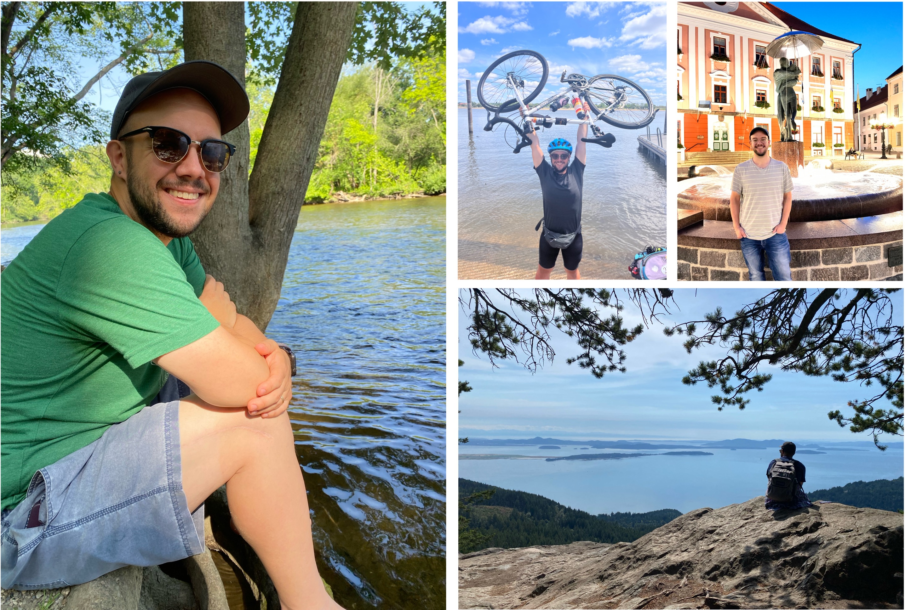

Academic journey
I did my Bachelors of Science studies in Astrophysics and Mathematics at the University of Minnesota--Twin Cities (UMN). My entry into research occurred in my sophomore year, in the UMN LIGO group under the guidance of Prof. Vuk Mandic, where I helped characterize the 3D seismic environment in which underground LIGO-like detectors may be located. I implemented a novel weighted-averaging scheme estimating seismic wave speed depth-dependence as a function of site geology and mineralogy. My presentation of this research earned top marks at the Winchell Science Symposium and kick-started my passion for research. However, I wanted to focus on Astrophysics, so pursued my undegraduate thesis with Prof. Liliya L.R. Williams, where I investigated the role dark matter substructure plays in strong lens reconstructions. Specifically, we focused on the question of whether galaxies with asymmetry in their baryonic and dark matter components can be fit with smooth mass models and found that some galactic models were not sensitive to all alignments of baryonic+DM components. The precursors of this project were shared at the UMN Undergraduate Research Symposium where it was awarded Top Poster Presentation and the Undergraduate Research Award by Sigma Xi: The American Research Society. Eventually, this led to a publication in MNRAS.
After graduation, I took some time to be with family following the passing of my mother. I supported myself during this by working in the biophysics wet lab of Dr. Vincent Noireaux at UMN preparing transcription-translation reactions in E. Coli. This was a formative experience, in that it provided me a glimpse into what it was like to do research for a living and importantly that my passions were truly with astronomy.
Applying on a whim to the XCP Computational Physics Summer Fellowship at the Los Alamos National Lab (LANL) in 2018 led to a summer working with Drs. Hui Li and Shengtai Li using the LA-COMPASS code to study the role dust coagulation has on the longevity of vortices in 2D protoplantary disks. Not only was this a far-cry from the research I had done in the past, but it was my first foray into computational astrophysics. I was enamored. I naively thought planet formation was a solved problem. We live on a planet, after all. Yet, I learned of the meter sized barrier, the radial drift barrier, and the emerging theories of planet formation spurred on by observations by ALMA. With simulations, I can watch hundreds of thousands of years of disk evolution in a matter of seconds and get one step closer to answering these questions.
But still, I thought, for certain, I wanted to study gravitational lensing. I applied unsuccessfully (for a third time) to PhD programs, but got connected with Dr. Simona Vegetti at the Max Planck Institute for Astrophysics in Garching by Munich, Germany. A summer internship at MPA studying the shapes of halos in IllustrisTNG in CDM and self-interacting had to be put on hold after I suffered complications from a debilitating accident. I continued remotely, while supporting myself as a Teaching Specialist with the Minnesota Institute for Astrophysics at UMN. While I did not get accepted to PhD positions at that time, I did get accepted to the Masters of Science Astrophysics program at Ludiwg Maximilians University in Munich, Germany.
For the first year at LMU, I continued studying halo shapes with Dr. Vegetti and Dr. Giulia Despali. However, I kept coming back to protoplanetary disks and planet formation, to the major questions of planet formation I learned during my Fellowship at LANL. I did my Masters thesis with Prof. Dr. Til Birnstiel, whose group had previously collaborated with my mentors at LANL to include a multifluid dust coagulation module into LA-COMPASS. The work for my Masters thesis focused on the observational signatures of vortices in multidimensional simulations and the role dust coagulation has in shaping what we observe. I found that show that increased dust densities alone cannot account for the differences seen in the radiative transfer.
Watching a system unfurl for me to discover the gems buried within is what drives me.
Hobbies
After a debilitating accident in 2019 left me wheelchair bound for three years (including the entirety of my Masters studies, which happened to take place during the COVID pandemic...2020 was a rough year), I was determined not take movement for granted. I will be forever thankful and grateful for the doctors and physical therapist that helped me to walk again. I took this renewed freedom and began cycling, which blossomed into a new lifelong passion. I have even biked across the entire state of Iowa in the course of one very hot week in July. Recently I wanted to test my mettle and check off a bucket-list fitness item by doing a triathlon. In 2025, I did my first triathlon.
You can also find me putting together Lego sets, (re-)reading something by Tolkien, or listening to music. If you are ambling about Ann Arbor on the weekends, you might find me at Encore Records perusing the Used section for my next vinyl purchase.